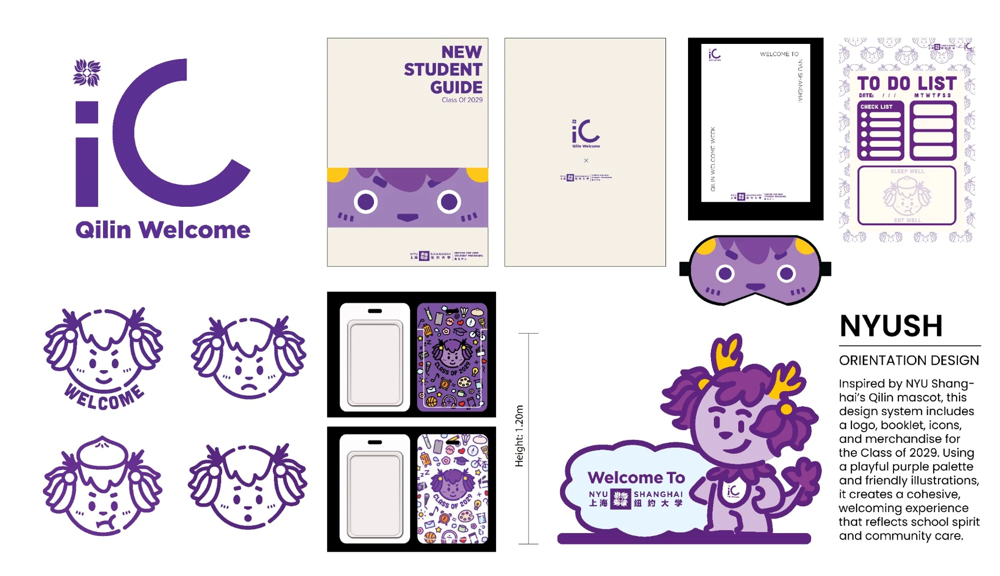
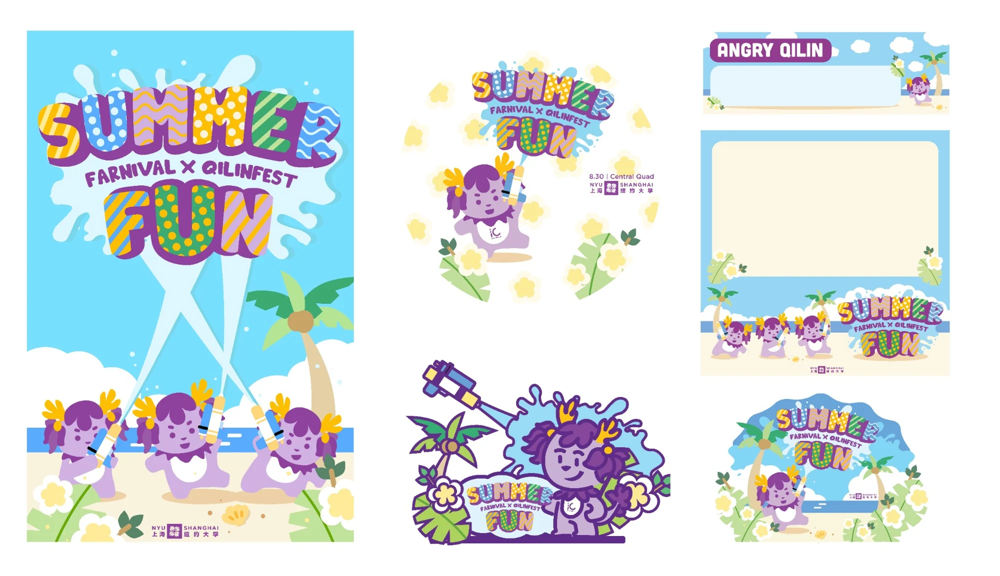
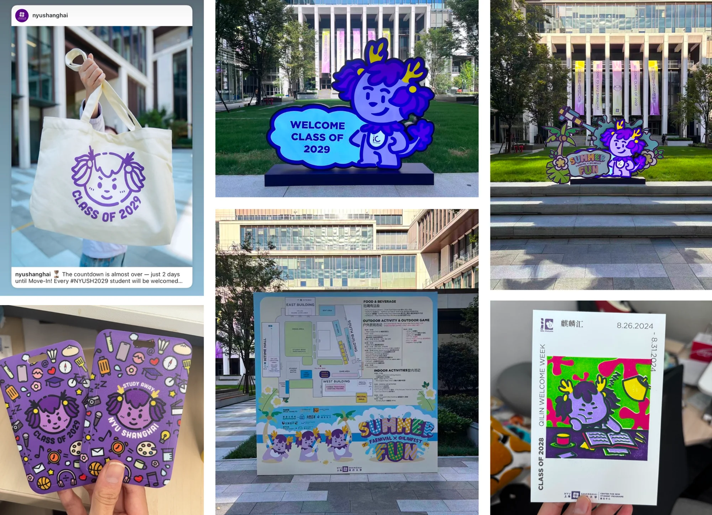
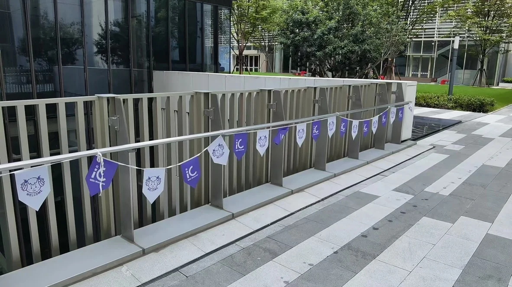

WANG
WANG
NYU
SHANGHAI✳
Orientation Week.
A playful welcome to campus life, built around the Qilin mascot and a vibrant, adaptable visual language.

The visual identity comes to life as a large-scale installation on campus.
A colorful welcome to campus life.
This project presents a visual identity for NYU Shanghai's Orientation Week using the university's Qilin mascot, expressive illustrations and a playful purple palette.
The system extends across welcome materials, printed graphics, merchandise, event signage and physical installations, connecting the identity across different scales and media.
Meet the Qilin.
An expressive mascot becomes a consistent visual system across identity, editorial materials and merchandise.

Summer Fun.
Playful lettering, illustration and bold colors extend the Qilin identity into a summer-themed event series.

Beyond the page.
The system moves between print, merchandise, signage and shared campus spaces.


From a single character to a welcoming environment.
NYU SHANGHAI / 2026